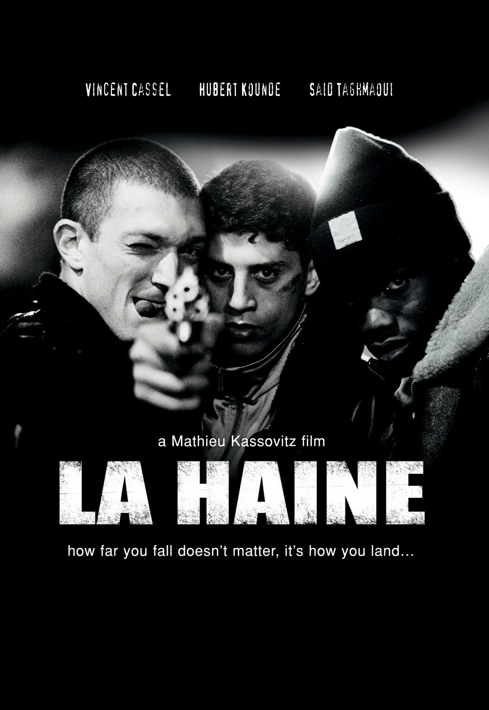

Edward Sparks
Ruby programmer and awesome guy
After a peppered career in entrepreneurship, sales and property development, I decided ENOUGH WAS ENOUGH! I wanted a skill that could combine my creativity, entrepreneurial flair and desire to work in an industry that is at the forefront of technology. The only choice was to be a developer and Le Wagon helped make that a reality
|  |
La HaineOne of the first films I watched in Film Studies back in school. Instantly liked the cinematography from Mathieu Cassovitz and the raw acting of Said and Vincent Cassel who was a complete unknown at the time |

|
DeadpoolOne of my all time favourite movies. I don't think I could watch this too much. It's funny, violent and engrossing. What more could you want! |

|
Star TrekHaving never got into the Star Trek TV franchise or the previous poorly put together movies, I had low hopes for this installment. I was beyond surprise when I first watched it and it is now one of my top 3 movies of all time. |